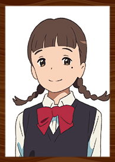
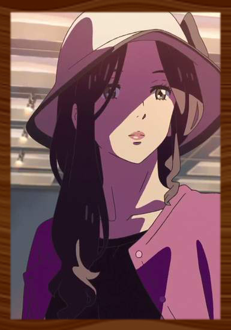

-
立花泷
演员-
配音 神木隆之介 ;皇贞季（国语）
住在东京中心的男高中生。每天和朋友们愉快地度日，在一家意式餐厅打工。对同僚奥寺前辈怀有好感。对建筑和美术很感兴趣。
-
宫水三叶
演员-
配音 上白石萌音 ;佟心竹（国语）
住在深山乡间小町糸守町的女高中生。身为糸守町长的父亲离家在外，和还是小学生的妹妹以及祖母三个人生活。性格直率，对家族神社的风俗和父亲的选举活动等事情感到反感。和朋友们对这狭小的城镇叹息，憧憬着东京的华丽生活。
-

名取早耶香
演员-
悠木碧 ;牟珈论（国语）
三叶的同级生。青梅竹马般的好友。文静且有常识。对敕使河原有好感。姐姐在市政厅担当广播员。
-
宫水四叶
演员-
配音 谷花音 ;杨鸣（国语））
三叶的妹妹。可靠的时下小学四年生。与祖母和三叶一起帮忙神社的家业。
-

奥寺美纪
演员-
配音 长泽雅美 ；纪艳芳（国语）
泷的打工前辈。打扮漂亮的女大学生，包括泷在内的男性们的憧憬。
-
宫水一叶
演员-
配音 市原悦子 ；隋桂凤（国语）
三叶的祖母。宫水神社现任神主。在自己的女儿、三叶的母亲亡故，三叶的父亲离开家后，独自一人抚养三叶和四叶长大。
-
敕使河原克彦
演员-
配音 成田凌 ；孟令军（国语）
三叶的同级生。神秘的机械宅。对在当地从事建筑业的父亲抱着复杂的心情。对三叶的事情很在意。
-
藤井司
演员-
配音 岛崎信长 ；高晗（国语）
泷在高中的朋友。虽然外表冷淡却意外地很爱照顾人。和泷同样对建筑感兴趣。
-
高木真太
演员-
配音 石川界人 ；赵鑫（国语）
泷的同级生。身材高大却有直爽的性格。常与泷和司一起，下课后到咖啡店去。